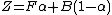
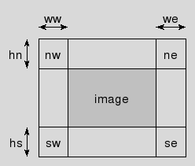
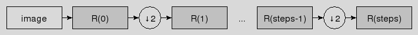
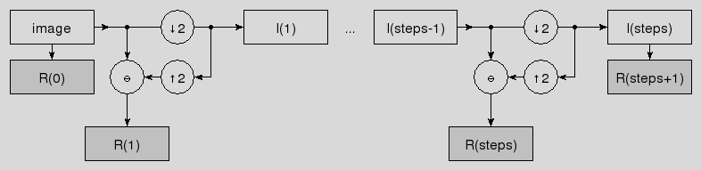
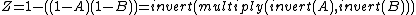
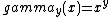
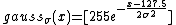
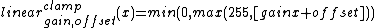
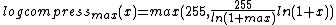
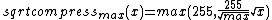

[ Table Of Contents | Keyword Index ]
crimp(n) 1.0.1 doc "Image Manipulation"
Name
crimp - Image Manipulation (not yet independent of Tk)
Synopsis
- package require Tcl 8.5
- package require Tk 8.5
- package require crimp ?0?
- ::crimp channels image
- ::crimp dimensions image
- ::crimp height image
- ::crimp histogram image
- ::crimp meta append image key ?string...?
- ::crimp meta create image ?key value...?
- ::crimp meta exists image key ?key...?
- ::crimp meta filter image args...
- ::crimp meta for image {keyVar valueVar} body
- ::crimp meta get image ?key...?
- ::crimp meta incr image key ?increment?
- ::crimp meta info image
- ::crimp meta keys image ?globPattern?
- ::crimp meta lappend image key ?value...?
- ::crimp meta merge image ?dictionaryValue...?
- ::crimp meta remove image ?key...?
- ::crimp meta replace image ?key value...?
- ::crimp meta set image key ?key...? value
- ::crimp meta size image
- ::crimp meta unset image key ?key...?
- ::crimp meta values image ?globPattern?
- ::crimp pixel image
- ::crimp statistics basic image
- ::crimp statistics otsu stats
- ::crimp type image
- ::crimp width image
- ::crimp add image1 image2 ?scale? ?offset?
- ::crimp alpha blend foreground background alpha
- ::crimp alpha set image mask
- ::crimp alpha opaque image
- ::crimp alpha over foreground background
- ::crimp blank type width height value...
- ::crimp crop image ww hn we hs
- ::crimp cut image x y w h
- ::crimp decimate xy image factor kernel
- ::crimp decimate x image factor kernel
- ::crimp decimate y image factor kernel
- ::crimp degamma image y
- ::crimp difference image1 image2
- ::crimp downsample xy image factor
- ::crimp downsample x image factor
- ::crimp downsample y image factor
- ::crimp effect charcoal image
- ::crimp effect emboss image
- ::crimp effect sharpen image
- ::crimp expand const image ww hn we hs ?value...?
- ::crimp expand extend image ww hn we hs
- ::crimp expand mirror image ww hn we hs
- ::crimp expand replicate image ww hn we hs
- ::crimp expand wrap image ww hn we hs
- ::crimp fft forward image
- ::crimp fft backward image
- ::crimp filter ahe image ?-border spec? ?radius?
- ::crimp filter convolve image ?-border spec? kernel...
- ::crimp filter mean image ?-border spec? ?radius?
- ::crimp filter rank image ?-border spec? ?radius ?percentile??
- ::crimp filter stddev image ?-border spec? ?radius?
- ::crimp gamma image y
- ::crimp integrate image
- ::crimp interpolate xy image factor kernel
- ::crimp interpolate x image factor kernel
- ::crimp interpolate y image factor kernel
- ::crimp invert image
- ::crimp matrix image matrix
- ::crimp max image1 image2
- ::crimp min image1 image2
- ::crimp montage horizontal ?-align top|center|bottom? ?-border spec? image...
- ::crimp montage vertical ?-align left|middle|right? ?-border spec? image...
- ::crimp morph dilate image
- ::crimp morph erode image
- ::crimp morph close image
- ::crimp morph open image
- ::crimp morph gradient image
- ::crimp morph igradient image
- ::crimp morph egradient image
- ::crimp morph tophatw image
- ::crimp morph tophatb image
- ::crimp multiply image1 image2
- ::crimp psychedelia width height frames
- ::crimp pyramid run image steps stepcmd
- <stepcmd> image
- ::crimp pyramid gauss image steps
- ::crimp pyramid laplace image steps
- ::crimp remap image map...
- ::crimp screen image1 image2
- ::crimp solarize image threshold
- ::crimp square image
- ::crimp subtract image1 image2 ?scale? ?offset?
- ::crimp threshold global above image threshold
- ::crimp threshold global below image threshold
- ::crimp threshold global inside image min max
- ::crimp threshold global outside image min max
- ::crimp threshold global middle image
- ::crimp threshold global mean image
- ::crimp threshold global median image
- ::crimp threshold global otsu image
- ::crimp threshold local image threshold...
- ::crimp upsample xy image factor
- ::crimp upsample x image factor
- ::crimp upsample y image factor
- ::crimp wavy image offset adj1 adjb
- ::crimp flip horizontal image
- ::crimp flip transpose image
- ::crimp flip transverse image
- ::crimp flip vertical image
- ::crimp resize ?-interpolate nneighbour|bilinear|bicubic? image w h
- ::crimp rotate cw image
- ::crimp rotate ccw image
- ::crimp rotate half image
- ::crimp warp field ?-interpolate nneighbour|bilinear|bicubic? image xvec yvec
- ::crimp warp projective ?-interpolate nneighbour|bilinear|bicubic? image transform
- ::crimp convert 2grey8 image
- ::crimp convert 2hsv image
- ::crimp convert 2rgba image
- ::crimp convert 2rgb image
- ::crimp join 2hsv hueImage satImage valImage
- ::crimp join 2rgba redImage greenImage blueImage alphaImage
- ::crimp join 2rgb redImage greenImage blueImage
- ::crimp split image
- ::crimp read pgm string
- ::crimp read ppm string
- ::crimp read strimj string ?colormap?
- ::crimp read tcl grey8 pixelmatrix
- ::crimp read tcl float pixelmatrix
- ::crimp read tk photo
- ::crimp write 2tk photo image
- ::crimp write 2string format image
- ::crimp write 2chan format chan image
- ::crimp write 2file format path image
- ::crimp gradient grey8 from to size
- ::crimp gradient rgb from to size
- ::crimp gradient rgba from to size
- ::crimp gradient hsv from to size
- ::crimp kernel make matrix ?scale? ?offset?
- ::crimp kernel fpmake matrix ?offset?
- ::crimp kernel transpose kernel
- ::crimp map arg...
- ::crimp mapof table
- ::crimp table compose f g
- ::crimp table eval ?-wrap? cmd
- <cmd> x
- ::crimp table degamma y
- ::crimp table gamma y
- ::crimp table gauss sigma
- ::crimp table identity
- ::crimp table invers
- ::crimp table linear ?-wrap? gain offset
- ::crimp table log ?max?
- ::crimp table solarize threshold
- ::crimp table sqrt ?max?
- ::crimp table stretch min max
- ::crimp table threshold above threshold
- ::crimp table threshold below threshold
- ::crimp table threshold inside min max
- ::crimp table threshold outside min max
- ::crimp transform affine a b c d e f
- ::crimp transform chain transform...
- ::crimp transform invert transform
- ::crimp transform projective a b c d e f g h
- ::crimp transform quadrilateral src dst
- ::crimp transform rotate theta ?center?
- ::crimp transform scale sx sy
- ::crimp transform translate dx dy
Description
This package provides image manipulation commands which are mostly independent of Tk. The only parts currently depending on Tk are for the import and export of images from and to Tk photos, necessary for display.
Note that the intended audience of this document are the users of crimp. Developers wishing to work on the internals of the package, but unfamiliar with them, should read ... instead.
Images
Images are values. This means that they have a string representation. It is however strongly recommended to not access this representation at all, and to only use the accessor commands provided by crimp to obtain the information stored in the internal representation of image values.
The reason behind this is simple: Memory and speed. Images can be large. Generating the string representation from the internal one roughly doubles the memory needed to store it, actually a bit more, due to the necessary quoting of bytes in UTF-8 and list-quting them as well. Furthermore such a conversion takes time, roughly proportional to the size of the image itself, in either direction. Properly accessing the image information without the package's accessor commands requires list commands. This causes the loss of the internal representation, thus forcing later a reconversion to the image's internal represention when it is used as image again. I.e. the shimmering forces us to convert twice.
Therefore, to avoid this, use only the crimp commands to access the images. Even the raw pixel data is accessible in this manner. While access to that in a Tcl script is, IMHO, highly unusual, there are situations where it is beneficial. An example of such a situation are the commands exporting images to raw portable any-maps (PNMs). Our pixel data fits these formats exactly, and with access to it these commands could be written in Tcl instead of requiring C level primitives.
Image Types
Each image has a type, a string implicitly describing features like the colorspace the image is in, the number of (color) channels, the domain, i.e. bit-depth, of pixel values in the channels, etc.
All type strings have the form crimp::image::foo.
The package currently knows the following types:
- rgba
- Colorspace
RGB also known as Red, Green, and Blue.
- Channels
4, named "red", "green", and "blue", plus an "alpha" channel controlling pixel opacity.
- Bit-depth
1 byte/channel (8 bit, values 0-255).
- Pixel-size
4 bytes.
- rgb
- Colorspace
RGB also known as Red, Green, and Blue.
- Channels
3, named "red", "green", and "blue".
- Bit-depth
1 byte/channel (8 bit, values 0-255).
- Pixel-size
3 bytes.
- hsv
- Colorspace
HSV, also known as Hue, Saturation, and Value.
- Channels
3, named "hue", "saturation", and "value".
- Bit-depth
1 byte/channel (8 bit, values 0-255).
- Pixel-size
3 bytes.
- grey8
- Colorspace
Greyscale.
- Channels
1, named "luma".
- Bit-depth
1 byte/channel (8 bit, values 0-255).
- Pixel-size
1 byte.
- grey16
- Colorspace
Greyscale.
- Channels
1, named "luma".
- Bit-depth
2 byte/channel (16 bit, values 0-65,535).
- Pixel-size
2 bytes.
- grey32
- Colorspace
Greyscale.
- Channels
1, named "luma".
- Bit-depth
4 byte/channel (16 bit, values 0-4,294,967,296).
- Pixel-size
4 bytes.
- bw
- Colorspace
Binary.
- Channels
1, named "bw".
- Bit-depth
1 bit/channel.
- Pixel-size
1 byte. I.e. 7 bits/channel are wasted.
- float
- Colorspace
N.A / Floating Point.
- Channels
1, named "value".
- Bit-depth
4 byte/channel.
- Pixel-size
4 byte.
Support for the various types varies by operation. The exact image types supported by each operation are listed the operation's description. Invoking an operation for a type it doesn't support will generally cause it to throw an error.
General design
All commands operate in a pipeline fashion, taking zero or more image values, zero or more other arguments, and returning zero or more images or other values. None are operating in place, i.e. taking an image variable and writing back to it.
They fall into five categories, namely:

- Accessors
They take one or more images, extract information about them, and return this information as their result. This can be a simple as querying the image's height, to something as complex as counting pixel values for a histogram.
The list of accessors, their syntax, and detailed meaning can be found in section Accessors.
- Manipulators
These take an image and transform its contents in some way, leaving the image type unchanged. Examples of commands in category are inversion, gamma conversion, etc. They fall into two sub-categories, manipulation of the image geometry, and of the intensity values or colors.
The list of manipulators, their syntax, and detailed meaning can be found in section Manipulators.
- Converters
Similar to manipulators, except that they change the image's type, preserving the content instead. Here reside operations like conversion between the HSV and RGB colorspaces, to greyscale and back, etc.
The list of converters, their syntax, and detailed meaning can be found in section Converters.
- I/O
Another variant of the same theme, i.e. akin to converters and manipulators, yet not the same, these commands read and write images from and to files or other data structures. I.e. they convert between different serializations of image content and type.
The list of I/O commands, their syntax, and detailed meaning can be found in section I/O commands.
- Support
Lastly, but not leastly a number of commands, which, while not image commands themselves, support the others.
The list of supporting commands, their syntax, and detailed meaning can be found in section Support.
API
Accessors
- ::crimp channels image
This method returns a list containing the names of the channels in the image. The order of channels is the same as expected by the remap method.
The method supports all image types.
- ::crimp dimensions image
This method returns the width and height of the image (in pixels). The result is a 2-element list containing width and height, in this order.
The method supports all image types.
- ::crimp height image
This method returns the height of the image (in pixels).
The method supports all image types.
- ::crimp histogram image
This method returns a nested dictionary as its result. The outer dictionary is indexed by the names of the channels in the image. Its values, the inner dictionaries, are indexed by pixel value. The associated values are the number of pixels with that value.
The method supports all image types except "grey32". Under the current system the result would be a dictionary with 2^32 keys and values, taking up, roughly, 192 GiByte of memory in the worst case, and 96 GiByte in best case (all counter values shared in a single object).
- ::crimp meta append image key ?string...?
- ::crimp meta create image ?key value...?
- ::crimp meta exists image key ?key...?
- ::crimp meta filter image args...
- ::crimp meta for image {keyVar valueVar} body
- ::crimp meta get image ?key...?
- ::crimp meta incr image key ?increment?
- ::crimp meta info image
- ::crimp meta keys image ?globPattern?
- ::crimp meta lappend image key ?value...?
- ::crimp meta merge image ?dictionaryValue...?
- ::crimp meta remove image ?key...?
- ::crimp meta replace image ?key value...?
- ::crimp meta set image key ?key...? value
- ::crimp meta size image
- ::crimp meta unset image key ?key...?
- ::crimp meta values image ?globPattern?
These methods provide access to the meta data slot of images, treating its contents as a dictionary. As such all the methods provided here have an appropriate counterpart in the methods of Tcl's builtin command dict, with the image's metadata taking the place of the dictionary value or vqariable. The converse is not true, as dict's methods update and with are not supported here.
Please read the documentation of Tcl's dict command for reference.
NOTE that the toplevel key crimp is reserved for use by CRIMP itself.
- ::crimp pixel image
This method returns the raw pixels of the image as a Tcl ByteArray.
The method supports all image types.
- ::crimp statistics basic image
This method returns a nested dictionary as its result. The outer dictionary contains basic information about the image, see the list of keys below. The inner dictionaries hold data about each (color) channel in the image, namely histogram and derived data like minumum pixel value, maximum, etc.
- dimensions
2-element list holding image width and height, in this order.
- height
Image height as separate value.
- pixels
Number of pixels in the image, the product of its width and height.
- type
Type of the image.
- width
Image width as separate value.
- channels
List of the names for the channels in the image.
- channel
A dictionary mapping the names of the image's channels, as listed under key channels, to a dictionary holding the statistics for that channel.
- min
The minimal pixel value with a non-zero population.
- max
The maximal pixel value with a non-zero population.
- mean
The arithmetic mean (aka average) of pixel values.
- middle
The arithmetic mean of the min and max pixel values.
- median
The median pixel value.
- stddev
The standard deviation of pixel values.
- variance
The variance of pixel values, square of the standard deviation.
- histogram
A dictionary mapping pixel values to population counts.
- hf
The histogram reduced to the population counts, sorted by pixel value to direct indexing into the list by pixel values.
- cdf
The cumulative density function of pixel values. The discrete integral of hf.
- cdf255
Same as cdf, except scaled down so that the last value in the series is 255.
The method supports all image types except "grey32". Under the current system the result would contain internal dictionaries with 2^32 keys and values, taking up, roughly, 192 GiByte of memory in the worst case, and 96 GiByte in best case (all counter values shared in a single object).
- ::crimp statistics otsu stats
This method takes a dictionary of basic image statistics as generated by crimp statistics basic and returns an extended dictionary containing a threshold for image binarization computed by Otsu's method (See reference 2). Note that this threshold is computed separately for each channel and stored in the channel specific part of the dictionary, using the key otsu.
- ::crimp type image
This method returns the type of the image.
The method supports all image types.
- ::crimp width image
This method returns the width of the image (in pixels).
The method supports all image types.
Manipulators
- ::crimp add image1 image2 ?scale? ?offset?
This method combines the two input images into a result image by performing a pixelwise addition (image1 + image2) followed by division through scale and addition of the offset. They default to 1 and 0 respectively, if they are not specified.
- ::crimp alpha blend foreground background alpha
This method takes two images of identical dimensions and a blending factor alpha and returns an image which is a mix of both, with each pixel blended per the formula

or, alternatively written
This means that the foreground is returned as is for "alpha == 255", and the background for "alpha == 0". I.e. the argument alpha controls the opacity of the foreground, with 1 and 0 standing for "fully opaque" and "fully transparent", respectively.
The following combinations of fore- and background image types are supported:
Result = Foreground Background ------ ---------- ---------- grey8 grey8 grey8 hsv hsv hsv rgb rgb grey8 rgb rgb rgb rgb rgb rgba rgba rgba grey8 rgba rgba rgb rgba rgba rgba ------ ---------- ----------- ::crimp alpha set image mask
This command takes two images, the input and a mask, and returns an image as result in which the mask is the alpha channel of the input. The result is therefore always of type rgba, as the only type supporting an alpha channel.
The input image can be of type rgb or rgba. In case of the latter the existing alpha channel is replaced, in case of the former an alpha channel is added.
For the mask images of type grey8 and rgba are accepted. In the case of the latter the mask's alpha channel is used as the new alpha channel, in case of the former the mask itself is used.
- ::crimp alpha opaque image
A convenience method over alpha set, giving the image a mask which makes it fully opaque.
- ::crimp alpha over foreground background
This method is similar to blend above, except that there is no global blending parameter. This information is taken from the "alpha" channel of the foreground image instead. The blending formula is the same, except that the alpha parameter is now a per-pixel value, and not constant across the image.
Due to the need for an alpha channel the foreground has to be of type rgba. For the background image the types rgb and rgba are supported.
- ::crimp blank type width height value...
This method returns a blank image of the given image type and dimensions. The values after the dimensions are the pixel values to fill the pixels in the image's channels with, per its type.
This method currently support only the types rgb, rgba, and grey8.
- ::crimp crop image ww hn we hs
This method is the counterpart to the expand family of methods, shrinking an image by removing a border. The size of this border is specified by the four arguments ww, hn, we, and hs which provide the number of pixels to remove from the named edge. See the image below for a graphical representation.

- ::crimp cut image x y w h
This method cuts the rectangular region specified throught its x/y position relative to the upper-left corner of the input image and its dimensions, and returns it as its own image.
- ::crimp decimate xy image factor kernel
- ::crimp decimate x image factor kernel
- ::crimp decimate y image factor kernel
This is a convenience method combining the two steps of filtering an image (via filter convolve), followed by a downsample step. See the method interpolate for the complementary operation.
Note that while the kernel argument for filter convolve is expected to be the 1D form of a separable low-pass filter no checks are made. The method simply applies both the kernel and its transposed form.
The method pyramid gauss is a user of this method.
- ::crimp degamma image y
This method takes an image, runs it through an inverse gamma correction with parameter y, and returns the corrected image as it result. This is an application of method remap, using the mapping returned by "map degamma y". This method supports all image types supported by the method remap.
- ::crimp difference image1 image2
This method combines the two input images into a result image by taking the pixelwise absolute difference (|image1 - image2|).
- ::crimp downsample xy image factor
- ::crimp downsample x image factor
- ::crimp downsample y image factor
This method returns an image containing only every factor pixel of the input image (in x, y, or both dimensions). The effect is that the input is shrunken by factor. It is the complement of method upsample.
Using the method as is is not recommended because the simple subsampling will cause higher image frequencies to alias into the reduced spectrum, causing artifacts to appear in the result. This is normally avoided by running a low-pass filter over the image before doing downsampling, removing the problematic frequencies.
The decimate method is a convenience method combining these two steps into one.
- ::crimp effect charcoal image
This method applies a charcoal effect to the image, i.e. it returns a grey8 image showing the input as if it had been drawn with a charcoal pencil.
- ::crimp effect emboss image
This method applies an embossing effect to the image, i.e. it returns an image of the same type as the input showing the input as if it had been embossed into a metal plate with a stencil of some kind.
- ::crimp effect sharpen image
This method sharpens the input image, i.e. returns an image of the same type as the input in which the input's edges are emphasized.
- ::crimp expand const image ww hn we hs ?value...?
- ::crimp expand extend image ww hn we hs
- ::crimp expand mirror image ww hn we hs
- ::crimp expand replicate image ww hn we hs
- ::crimp expand wrap image ww hn we hs
This set of methods takes an image and expands it by adding a border. The size of this border is specified by the four arguments ww, hn, we, and hs which provide the number of pixels to add at the named edge. See the image below for a graphical representation.
The contents of the border's pixels are specified via the border type, the first argument after expand, as per the list below.
- const
The additional values specify the values to use for the color channels of the image. Values beyond the number of channels in the image are ignored. Missing values are generated by replicating the last value, except for the alpha channel, which will be set to 255. If no values are present they default to 0.
- extend
This is a combination of mirror and replicate. The outside pixels are the result of subtracting the outside pixel for mirror from the outside pixel for replicate (and clamping to the range [0...255]).
- mirror
The outside pixels take the value of the associated inside pixels, found by reflecting its coordinates along the relevant edges.
- replicate
The outside pixels take the value of the associated edge pixels, i.e. replicating them into the border.
- wrap
The outside pixels take the value of the associated inside pixels, found by toroidial (cyclic) wrapping its coordinates along the relevant edges. This is also called tiling.
- ::crimp fft forward image
- ::crimp fft backward image
These two methods implement 2D FFT (forward) and inverse FFT (backward).
The input is restricted to images of the single-channel types, i.e. float and grey{8,16,32}. The result is always of type float.
The former means that it is necessary to split rgb, etc. images into their channels before performing an FFT, and that results of an inverse FFT have to be joined. See the methods split and join for the relevant operations and their syntax.
The latter means that a separate invokation of method convert 2grey8 is required when reconstructing an image by inverting its FFT.
- ::crimp filter ahe image ?-border spec? ?radius?
This method performs adaptive histogram equalization to enhance the contrast of the input image. Each pixel undergoes regular histogram equalization, with the histogram computed from the pixels in the NxN square centered on it, where "N = 2*radius+1".
The default radius is 3, for a 7x7 square.
- ::crimp filter convolve image ?-border spec? kernel...
This method runs the series of filters specified by the convolution kernels over the input and returns the filtered result. See the method kernel and its sub-methods for commands to create and manipulate suitable kernels.
The border specification determines how the input image is expanded (see method expand) to compensate for the shrinkage introduced by the filter itself. The spec argument is a list containing the name of the sub-method of expand to use, plus any additional arguments this method may need, except for the size of the expansion.
By default a black frame is used as the border, i.e. "spec == {const 0}".
- ::crimp filter mean image ?-border spec? ?radius?
This method applies a mean filter with radius to the image. I.e. each pixel of the result is the mean value of all pixels in the NxN square centered on it, where "N = 2*radius+1".
The default radius is 3, for a 7x7 square.
NOTE. As the mean is known to be in the range defined by the channel this method automatically converts float results back to the channel type. This introduces rounding / quantization errors. As a result of this price being paid the method is able to handle multi-channel images, by automatically splitting, processing, and rejoining its channels.
The method filter stddev on the other makes the reverse tradeoff, keeping precision, but unable to handle multi-channel images.
- ::crimp filter rank image ?-border spec? ?radius ?percentile??
This method runs a rank-filter over the input and returns the filtered result.
The border specification determines how the input image is expanded (see method expand) to compensate for the shrinkage introduced by the filter itself. The spec argument is a list containing the name of the sub-method of expand to use, plus any additional arguments this method may need, except for the size of the expansion.
By default a black frame is used as the border, i.e. "spec == {const 0}".
The radius specifies the (square) region around each pixel which is taken into account by the filter, with the pixel value selected according to the percentile. The filter region of each pixel is a square of dimensions "2*radius+1", centered around the pixel.
These two values default to 3 and 50, respectively.
Typical applications of rank-filters are min-, max-, and median-filters, for percentiles 0, 100, and 50, respectively.
Note that percentiles outside of the range 0...100 make no sense and are clamped to this range.
- ::crimp filter stddev image ?-border spec? ?radius?
This method applies a stand deviation filter with radius to the image. I.e. each pixel of the result is the standard deviation of all pixel values in the NxN square centered on it, where "N = 2*radius+1".
The default radius is 3, for a 7x7 square.
NOTE. As the standard deviation is often quite small and its precision important the result of this method is always an image of type float. Because of this this method is unable to handle multi-channel images as the results of processing their channels cannot be joined back together for the proper type.
The method filter mean on the other hand makes the reverse tradeoff, handling multi-channel images, but dropping precision.
- ::crimp gamma image y
This method takes an image, runs it through a gamma correction with parameter y, and returns the corrected image as it result. This is an application of method remap, using the mapping returned by "map gamma y". This method supports all image types supported by the method remap.
- ::crimp integrate image
This method takes any single-channel image, i.e. of types float and grey{8,16,32}, and returns its integral, i.e. a summed area table. The type of the result is always of type float.
- ::crimp interpolate xy image factor kernel
- ::crimp interpolate x image factor kernel
- ::crimp interpolate y image factor kernel
This is a convenience method combining the two steps of an upsample, followed by a filter step (via filter convolve). See the method decimate for the complementary operation.
Note that while the kernel argument for filter convolve is expected to be 1D form of a separable low-pass filter no checks are made. The method simply applies both the kernel and its transposed form.
The methods pyramid gauss and pyramid laplace are users of this method.
- ::crimp invert image
This method takes an image, runs it through the inverse function, and returns the modified image as it result. This is an application of method remap, using the mapping returned by "map inverse". This method supports all image types supported by the method remap.
- ::crimp matrix image matrix
This method takes an image and a 3x3 matrix specified as nested Tcl list (row major order), applies the projective transform represented by the matrix to the image and returns the transformed image as its result.
Notes: It is currently unclear how the output pixel is computed (nearest neighbour, bilinear, etc.) (code inherited from AMG). This requires more reading, and teasing things apart. The transfomred image is clipped to the dimensions of the input image, i.e. pixels from the input may be lost, and pixels in the output may be unset as their input would come from outside of the input.
The operation supports only images of type rgba, and returns images of the same type.
- ::crimp max image1 image2
This method combines the two input images into a result image by taking the pixelwise maximum.
- ::crimp min image1 image2
This method combines the two input images into a result image by taking the pixelwise minimum.
- ::crimp montage horizontal ?-align top|center|bottom? ?-border spec? image...
- ::crimp montage vertical ?-align left|middle|right? ?-border spec? image...
The result of these methods is an image where the input images have been placed adjacent to each from left to right (horizontal), or top to bottom (vertical). The input images have to have the same type.
There is no need however for them to have the same height, or width, respectively. When images of different height (width) are used the command will expand them to their common height (width), which is the maximum of all heights (widths). The expansion process is further governed by the values of the -align and -border options, with the latter specifying the form of the expansion (see method expand for details), and the first specifying how the image is aligned within the expanded space.
The spec argument of -border is a list containing the name of the sub-method of expand to use, plus any additional arguments this method may need, except for the size of the expansion.
The default values for -align are center and middle, centering the image in the space. The default for the -border is a black frame, i.e. "spec == {const 0}".
- ::crimp morph dilate image
- ::crimp morph erode image
These two methods implement the basic set of morphology operations, erosion, and dilation using a flat 3x3 brick as their structuring element. For grayscale, which we have here, these are, mathematically, max and min rank-order filters, i.e.
dilate = filter rank 1 0.00 (min) erode = filter rank 1 99.99 (max)- ::crimp morph close image
- ::crimp morph open image
These two methods add to the basic set of morphology operations, opening and closing. In terms of erosion and dilation:
close = erode o dilate open = dilate o erode- ::crimp morph gradient image
The morphological gradient is defined as
[dilate $image] - [erode $image]This can also be expressed as the sum of the external and internal gradients, see below.
- ::crimp morph igradient image
The morphological internal gradient is defined as
$image - [erode image]- ::crimp morph egradient image
The morphological external gradient is defined as
[dilate $image] - $image- ::crimp morph tophatw image
The white tophat transformation is defined as
$image - [open $image]- ::crimp morph tophatb image
The black tophat transformation is defined as
[close $image] - $image- ::crimp multiply image1 image2
This method combines the two input images into a result image by performing a pixelwise multiplication. Note that the result of each multiplication is divided by 255 to scale it back into the range [0...255].
- ::crimp psychedelia width height frames
This method creates an rgba image of the specified dimensions according to an algorithm devised by Andrew M. Goth. The frames argument specifies how many images are in the series.
Attention: This method keeps internal global state, ensuring that each call returns a slightly different image. Showing a series of such images as animation provides an effect similar to a lava lamp or hallucination.
- ::crimp pyramid run image steps stepcmd
This method provides the core functionality for the generation of image pyramids. The command prefix stepcmd is run steps times, first on the image, then on the result of the previous step.
The assumed signature of stepcmd is
- <stepcmd> image
which is expected to return a list of two elements. The first element (result) is added to the pyramid in building, whereas the second element (iter) is used in the next step as the input of the step command.
The final result of the method is a list containing the input image as its first element, followed by the results of the step function, followed by the iter element returned by the last step, "steps+2" images in total.
- ::crimp pyramid gauss image steps
This method generates a gaussian image pyramid steps levels deep and returns it as a list of images.
The first image in the result is the input, followed by steps successively smaller images, each decimated by a factor two compared to its predecessor, for a total length of "steps+1" images.
The convolution part of the decimation uses
1/16 [1 4 6 4 1]
as its kernel.

- ::crimp pyramid laplace image steps
This method generates a laplacian image pyramid steps levels deep and returns it as a list of images.
The first image in the result is the input, followed by steps band pass images (differences of gaussians). The first band pass has the same size as the input image, and each successor is decimated by two. This is followed by one more image, the gaussian of the last step. This image is decimated by two compared to the preceding bandpass image. In total the result contains "steps+2" images.
The convolution part of the decimation uses
1/16 [1 4 6 4 1]
as its kernel. The internal interpolation used to generate the band pass images (resynthesis) doubles the weights of this kernel for its convolution step.

- ::crimp remap image map...
This method is the core primitive for the per-pixel transformation of images, with each pixel (and channels within, if any) handled independently of all others. Applications of this operator provided by this package are (inverse) gamma correction, pixel inversion, and solarization. Many more are possible, especially when considering other colorspaces like HSV. There, for example, it is possible change the saturation of pixels, or shift the hue in arbitrary manner.
Beyond the input image to transform one or more maps are specified which define how each pixel value in the input is mapped to a pixel value in the output. The command will accept at most that many maps as the input image has channels. If there are less maps than channel the last map specified is replicated to cover the other channels. An exception of this is the handling of the alpha channel, should the input image have such. There a missing map is handle as identity, i.e. the channel copied as is, without changes.
The maps are not Tcl data structures, but images themselves. They have to be of type grey8, and be of dimension 256x1 (width by height).
The crimp map ... methods are sources for a number of predefined maps, whereas the mapof method allows the construction of maps from Tcl data structures, namely lists of values.
This method supports all image types with one or more single-byte channels, i.e. all but grey16, grey32, float, and bw.
- ::crimp screen image1 image2
This method combines the two input images by inverting the multiplication of the inverted input images. I.e.

- ::crimp solarize image threshold
This method takes an image, runs it through the solarize function with parameter threshold, and returns the modified image as it result. This is also known as the sabattier effect. This is an application of method remap, using the mapping returned by "map solarize threshold". This method supports all image types supported by the method remap.
- ::crimp square image
This is a convenience method equivalent to "crimp multiply image image".
- ::crimp subtract image1 image2 ?scale? ?offset?
This method combines the two input images into a result image by performing a pixelwise subtraction (image1 - image2) followed by division through scale and addition of the offset. They default to 1 and 0 respectively, if they are not specified.
- ::crimp threshold global above image threshold
This method takes an image, runs it through the threshold above function with parameter threshold, and returns the modified image as it result. As the result only contains black and white, i.e. 2 colors, this process is also called binarization or foreground/background segmentation. This is an application of method remap, using the mapping returned by "map threshold above threshold". This method supports all image types supported by the method remap.
- ::crimp threshold global below image threshold
This method takes an image, runs it through the threshold below function with parameter threshold, and returns the modified image as it result. As the result only contains black and white, i.e. 2 colors, this process is also called binarization, or foreground/background segmentation. This is an application of method remap, using the mapping returned by "map threshold below threshold". This method supports all image types supported by the method remap.
- ::crimp threshold global inside image min max
This method takes an image, runs it through the threshold inside function with parameters min and max, and returns the modified image as it result. As the result only contains black and white, i.e. 2 colors, this process is also called binarization or foreground/background segmentation. This is an application of method remap, using the mapping returned by "map threshold above threshold". This method supports all image types supported by the method remap.
- ::crimp threshold global outside image min max
This method takes an image, runs it through the threshold outside function with parameters min and max, and returns the modified image as it result. As the result only contains black and white, i.e. 2 colors, this process is also called binarization, or foreground/background segmentation. This is an application of method remap, using the mapping returned by "map threshold below threshold". This method supports all image types supported by the method remap.
- ::crimp threshold global middle image
- ::crimp threshold global mean image
- ::crimp threshold global median image
- ::crimp threshold global otsu image
These four methods are convenience methods layered on top of crimp threshold global below. They compute the value(s) to perform the thresholding with from the global statistics of the input image, with the element taken named by the method. For reference see the documentation of method crimp statistics .... Note that they treat each color channel in the image separately.
- ::crimp threshold local image threshold...
This method takes an image and one or more threshold maps and returns an image where all pixels of the input which were larger or equal to the corresponding pixel in the map are set to black. All other pixels are set to white. Each map is applied to one color channel of the input image. If there are too many maps the remainder is ignored. If there are not enough maps the last map is replicated.
This is the core for all methods of non-global binarization, i.e. foreground/background segmentation. Their differences are just in the calculation of the maps.
This method supports all image types with one or more single-byte channels, i.e. all but grey16, grey32, and bw.
- ::crimp upsample xy image factor
- ::crimp upsample x image factor
- ::crimp upsample y image factor
This method returns an image inserting factor black pixels between each pixel of the input image (in x, y, or both dimensions). The effect is that the input is expanded by factor. It is the complement of method downsample.
Using the method as is is not recommended because this simple upsampling will cause copies of the image to appear at the higher image frequencies in the expanded spectrum. This is normally avoided by running a low-pass filter over the image after the upsampling, removing the problematic copies.
The interpolate method is a convenience method combining these two steps into one.
- ::crimp wavy image offset adj1 adjb
This method processes the input image according to an algorithm devised by Andrew M. Goth, according to the three parameters offset, adj1, and adjb, and returns the modified image as its result.
The operation supports only images of type rgba, and returns images of the same type.
- ::crimp flip horizontal image
- ::crimp flip transpose image
- ::crimp flip transverse image
- ::crimp flip vertical image
This set of methods performs mirroring along the horizontal, vertical and diagonal axes of the input image, returning the mirrored image as their output. Transpose mirrors along the main diagonal, transverse along the secondary diagonal. These two methods also exchange width and height of the image in the output.
The methods currently support the image types rgb, rgba, hsv, and grey8.
- ::crimp resize ?-interpolate nneighbour|bilinear|bicubic? image w h
This method takes the input image and resizes it to the specified width w and height h. In constrast to cut this is not done by taking part of the image in the specified size, but by scaling it up or down as needed. In other words, this method is a degenerate case of a projective transform as created by the transform methods and used by method warp projective (see below).
Like the aforementioned general method this method supports all the possible interpolation types, i.e. nearest neighbour, bilinear, and bicubic. By default bilinear interpolation is used, as a compromise between accuracy and speed.
- ::crimp rotate cw image
- ::crimp rotate ccw image
This set of methods rotates the image in steps of 90 degrees, either clockwise and counter to it.
- ::crimp rotate half image
This methods rotates the image a half-turn, i.e. 180 degrees.
- ::crimp warp field ?-interpolate nneighbour|bilinear|bicubic? image xvec yvec
This method takes an input image and two images the size of the expected result which provide for each pixel in the result the coordinates to sample in the input to determine the result's color.
This allows the specification of any possible geometric transformation and warping, going beyond even projective transformations.
The two images providing the coordinate information have to be of the same size, which is also the size of the returned result. The type of the result is however specified through the type of the input image.
The method supports all the possible interpolation types, i.e. nearest neighbour, bilinear, and bicubic. By default bilinear interpolation is used, as a compromise between accuracy and speed.
- ::crimp warp projective ?-interpolate nneighbour|bilinear|bicubic? image transform
This method accepts a general projective transform as created by the transform methods, applies it to the input image and returns the projected result.
Like the resize method above this method supports all the possible interpolation types, i.e. nearest neighbour, bilinear, and bicubic. By default bilinear interpolation is used, as a compromise between accuracy and speed.
Note that the returned result image is made as large as necessary to contain the whole of the projected input. Depending on the transformation this means that parts of the result can be black, coming from outside of the boundaries of the input. Further, the origin point of the result may conceptually be inside or outside of the result instead of at the top left corner, because of pixels in the input getting projected to negative coordinates. To handle this situation the result will contain the physical coordinates of the conceptual origin point in its meta data, under the hierarchical key crimp origin.
Converters
- ::crimp convert 2grey8 image
- ::crimp convert 2hsv image
- ::crimp convert 2rgba image
- ::crimp convert 2rgb image
This set of methods all convert their input image to the specified type and returns it as their result. All converters accept an image of the destination type as input and will pass it through unchanged.
The converters returning a grey8 image support rgb and rgba as their input, using the ITU-R 601-2 luma transform to merge the three color channels
The converters to HSV support rgb and rgba as their input as well.
The conversion to rgba accepts only hsv as input, adding a blank (fully opaque) alpha channel. For more control over the contents of an image's alpha channel see the methods setalpha and join rgba.
At last, the conversion to rgb accepts both rgba and hsv images as input.
- ::crimp join 2hsv hueImage satImage valImage
- ::crimp join 2rgba redImage greenImage blueImage alphaImage
- ::crimp join 2rgb redImage greenImage blueImage
This set of methods is the complement of method split. Each take a set of grey8 images and fuse them together into an image of the given type, with each input image becoming one channel of the fusing result, which is returned as the result of the command. All input images have to have the same dimensions.
- ::crimp split image
This method takes an image of one of the multi-channel types, i.e. rgb, const rgba], and hsv and returns a list of grey8 images, each of which contains the contents of one of the channels found in the input image.
The channel images in the result are provided in the same order as they are accepted by the complementary join method, see above.
I/O commands
- ::crimp read pgm string
This method returns an image of type grey8 containing the data of the portable grey map (PGM) stored in the string. The method recognizes images in both plain and raw sub-formats.
- ::crimp read ppm string
This method returns an image of type rgb containing the data of the portable pix map (PPM) stored in the string. The method recognizes images in both plain and raw sub-formats.
- ::crimp read strimj string ?colormap?
This method returns an image of type rgba containing the data of the strimj (string image) (See http://wiki.tcl.tk/1846) stored in the string.
The caller can override the standard mapping from pixel characters to colors by specifying a colormap. This argument is interpreted as dictionary mapping characters to triples of integers in the range [0...255], specifying the red, green, and blue intensities.
An example of a strimj is:
@...@.......@.@...... @...@.......@.@...... @...@..@@@..@.@..@@@. @@@@@.@...@.@.@.@...@ @...@.@@@@@.@.@.@...@ @...@.@.....@.@.@...@ @...@.@...@.@.@.@...@ @...@..@@@..@.@..@@@.
- ::crimp read tcl grey8 pixelmatrix
This method takes the pixelmatrix, a list of rows, with each row a list of pixel values in the domain [0..255] and returns an image of type grey8 whose height is the number of rows, i.e. the length of the outer list, and whose width is the maximum length found among the inner lists. Rows whose inner list is shorter than the maximum length are padded with black pixels, i.e. a pixel value of 255.
- ::crimp read tcl float pixelmatrix
This method takes the pixelmatrix, a list of rows, with each row a list of floating point values for pixel values and returns an image of type float whose height is the number of rows, i.e. the length of the outer list, and whose width is the maximum length found among the inner lists. Rows whose inner list is shorter than the maximum length are padded with a pixel value of 255.
- ::crimp read tk photo
This method returns an image of type rgba containing the data from the specified Tk photo image.
- ::crimp write 2tk photo image
This method writes the input image to the specified Tk photo image.
The method supports the writing of rgb, rgba, and grey8 images.
- ::crimp write 2string format image
- ::crimp write 2chan format chan image
- ::crimp write 2file format path image
This family of methods either returns the input image as a binary string in the specified format, or writes this string to the open channel chan, or the named file at path.
The image types accepted for writing are format dependent, and listed below, with the supported formats.
The currently supported formats are
- pgm-plain
The plain ASCII format of portable grey maps, as per http://en.wikipedia.org/wiki/Netpbm_format.
The methods support the writing of rgb, rgba, hsv, and grey8 images.
- pgm-raw
The raw binary format of portable grey maps, as per http://en.wikipedia.org/wiki/Netpbm_format.
The methods support the writing of rgb, rgba, hsv, and grey8 images.
- ppm-plain
The plain ASCII format of portable pix maps, as per http://en.wikipedia.org/wiki/Netpbm_format.
The methods support the writing of rgb, rgba, hsv, and grey8 images.
- ppm-raw
The raw binary format of portable pix maps, as per http://en.wikipedia.org/wiki/Netpbm_format.
The methods support the writing of rgb, rgba, hsv, and grey8 images.
Support
- ::crimp gradient grey8 from to size
- ::crimp gradient rgb from to size
- ::crimp gradient rgba from to size
- ::crimp gradient hsv from to size
This set of methods takes two "color" (pixel value) arguments and returns an image of height 1 and width size containing a gradient interpolating between these two colors, with from in the pixel at the left (x == 0) and to at the right (x == size-1).
size has to be greater than or equal to 2. An error is thrown if that restriction is not met.
The resulting image has the type indicated in the method name. This also specifies what is expected as the contents of the arguments from and to. For grey8 these are simple pixel values in the range 0...255 whereas for the types rgb and hsv the arguments are triples (3-element lists) specifying the R, G, and B (and H, S, and V respectively) values.
- ::crimp kernel make matrix ?scale? ?offset?
This method takes a matrix of weights and an optional scale factor and returns a structure containing the associated convolution kernel, ready for use by method filter convolve.
If scale is left unspecified it defaults to the sum of all weights in the matrix.
If offset is left unspecified it defaults to 128 if the sum of weights is 0, and 0 else. In effect zero-sum kernels, like the basic edge-detectors, are shifted so that results in the range -128..127 correspond to 0..255.
The matrix has the same general format as the pixel matrix for method read tcl grey8, i.e. a list of lists (rows) of values, and is treated in the same way, i.e. the number of columns is the maxium length over the row lists, and shorter lists are padded with 128. The values are expected to be integer numbers in the range -128..127.
- ::crimp kernel fpmake matrix ?offset?
This method is like kernel make except that the generated kernel is based on floating-point values. Because of this it is not accpeting a scale argument either, it is expected that the kernel weights already have the proper sum.
The matrix has the same general format as the pixel matrix for method read tcl float, i.e. a list of lists (rows) of values, and is treated in the same way, i.e. the number of columns is the maxium length over the row lists, and shorter lists are padded with 255. The values are expected to be floating-point numbers.
- ::crimp kernel transpose kernel
This method takes a kernel as returned by the method kernel make and returns a transposed kernel, i.e. one where the x- and y-axes are switched. For example
(1) (2) {1 2 4 2 1} ==> (4) (2) (1)This method is its own inverse, i.e. application to its result returns the original input, i.e.
[transpose [transpose $K]] == $K- ::crimp map arg...
This method accepts the same sub-methods and arguments as are accepted by the table method below. In contrast to table the result is not a list of values, but a map image directly suitable as argument to the remap method.
- ::crimp mapof table
This method accepts a list of 256 values, constructs a map image directly suitable as argument to the remap method, and returns this map image as its result.
- ::crimp table compose f g
This accepts two lookup tables (aka functions) specified as lists of 256 values, constructs the composite function f(g(x)), and then returns this new function as its result.
- ::crimp table eval ?-wrap? cmd
This method returns a list of 256 values, the result of running the values 0 to 255 through the function specified by the command prefix cmd. The results returned by the command prefix are rounded to the nearest integer and then forced into the domain [0..255] by either wrapping them around (modulo 256), or clamping them to the appropriate border, i.e 0, and 255 respectively. This is controlled by the presence of the option -wrap. When present the values are wrapped, otherwise (default) they are clamped.
The signature of the command prefix is
- <cmd> x
which is expected to return a number in the range [0..255]. While the result should be an integer number it is allowed to be a float, the caller takes care to round the result to the nearest integer.
- ::crimp table degamma y
This method returns a list of 256 values, the result of running the values 0 to 255 through the inverse gamma correction with parameter y. This inverse correction, defined in the domain of [0..1] for both argument and result, is defined as:
Scaling of argument and result into the domain [0..255] of pixel values, and rounding results to the nearest integer, causes the actual definition used to be
- ::crimp table gamma y
This method returns a list of 256 values, the result of running the values 0 to 255 through the gamma correction with parameter y. This correction, defined in the domain of [0..1] for both argument and result, is defined as:

Scaling of argument and result into the domain [0..255] of pixel values, and rounding results to the nearest integer, causes the actual definition used to be
- ::crimp table gauss sigma
This method returns a list of 256 values, the result of running the values 0 to 255 through the sampled gauss function with parameter sigma. This function is defined as:

- ::crimp table identity
This method returns a list of 256 values, the result of running the values 0 to 255 through the identity function, which is defined as
- ::crimp table invers
This method returns a list of 256 values, the result of running the values 0 to 255 through the inverse function, which is defined as
- ::crimp table linear ?-wrap? gain offset
This method returns a list of 256 values, the result of running the values 0 to 255 through a simple linear function with parameters gain (the slope) and offset. The results are rounded to the nearest integer and then forced into the domain [0..255] by either wrapping them around (modulo 256), or clamping them to the appropriate border, i.e 0, and 255 respectively. This is controlled by the presence of the option -wrap. When present the values are wrapped, otherwise (default) they are clamped. Thus the relevant definitions are
for the wrapped case, and
 when clamping.
- ::crimp table log ?max?
This method returns a list of 256 values, the result of running the values 0 to 255 through the log-compression function with parameter max. This parameter is the maximum pixel value the function is for, this value, and all larger will be mapped to 255. This function is defined as:

- ::crimp table solarize threshold
This method returns a list of 256 values, the result of running the values 0 to 255 through the solarize function, with parameter threshold. This function is defined as:

Note how the function is the identity for values under the threshold, and the inverse for values at and above it. Its application to an image produces what is known as either solarization or sabattier effect.
- ::crimp table sqrt ?max?
This method returns a list of 256 values, the result of running the values 0 to 255 through the sqrt-compression function with parameter max. This parameter is the maximum pixel value the function is for, this value, and all larger will be mapped to 255. This function is defined as:

- ::crimp table stretch min max
This is a convenience method around table linear which maps min to 0, and max to 255, with linear interpolation in between. Values below min and above max are clamped to 0 and 255 respectively.
- ::crimp table threshold above threshold
This method returns a list of 256 values, the result of running the values 0 to 255 through a thresholding (or binarization) function, with parameter threshold. This function is defined as:

- ::crimp table threshold below threshold
This method returns a list of 256 values, the result of running the values 0 to 255 through a thresholding (or binarization) function, with parameter threshold. This function is defined as:
- ::crimp table threshold inside min max
This method returns a list of 256 values, the result of running the values 0 to 255 through a thresholding (or binarization) function, with parameters min and max. This function is defined as:

- ::crimp table threshold outside min max
This method returns a list of 256 values, the result of running the values 0 to 255 through a thresholding (or binarization) function, with parameters min and max. This function is defined as:
- ::crimp transform affine a b c d e f
This method returns the affine transformation specified by the 2x3 matrix
|a b c| |d e f|Note that it is in general easier to use the methods rotate, scale, and translate scale to generate the desired transformation piecemal and then use chain to chain the pieces together.
- ::crimp transform chain transform...
This method computes and returns the projective transformation generated by applying the specified transformations in reverse order, i.e with the transformation at the end of the argument list applied first, then the one before it, etc.
- ::crimp transform invert transform
This method computes and returns the inverse of the specified projective transformation.
- ::crimp transform projective a b c d e f g h
This method returns the projective transformation specified by the 3x3 matrix
|a b c| |d e f| |g h 1|Note that for the affine subset of projective transformation it is in general easier to use the methods rotate, scale, and translate scale to generate the desired transformation piecemal and then use chain to chain the pieces together.
And for a true perspective transformation specification through quadrilateral should be simpler as well.
- ::crimp transform quadrilateral src dst
This method returns the projective transformation which maps the quadrilateral src on to the quadrilateral dst.
Each quadrilateral is specified as a list of 4 points, each point a pair of x- and y-coordinates.
- ::crimp transform rotate theta ?center?
This methods returns the projective transformation which rotates the image by the anglie theta around the point center. If the latter is not specified {0 0} is assumed. The point, if present, is specified as pair of x- and y-coordinates.
The angle is specified in degrees, with 0 not rotating the image at all. Positive values cause a counterclockwise rotation, negative values a clockwise one.
- ::crimp transform scale sx sy
This methods returns the projective transformation which scales an image by factor sx in width, and sy in height. Values larger than 1 expand the image along the specified dimension, while values less than 1 shrink it. Negative values flip the respective axis.
- ::crimp transform translate dx dy
This methods returns the projective transformation which translates an image by dx pixels along the x-axis, and dx pixels along the y-axis. Values larger than 0 move the image to the right, or down, along the specified dimension, while values less than 0 move it to the left, or up.
References
Simon Perreault and Patrick Hebert, "Median Filtering in Constant Time", 2007 http://nomis80.org/ctmf.html
Nobuyuki Otsu, "A threshold selection method from gray-level histograms", 1979 http://en.wikipedia.org/wiki/Otsu%27s_method
Keywords
affine, affine transform, alpha, alpha blending, alpha channel, average, binarization, black tophat, blending, channels, charcoal, clockwise, closing, composite blending, composition, const expansion, convolution filter, counter-clockwise, cropping, cut region, cyclic wrap expansion, dilation, dimensions, edge shrinking, effect, emboss, erosion, expansion, extend expansion, external gradient, extract rectangle, extract region, fast fourier transform, fft, filter, flip, fourier transform, gamma correction, geometry, gradient, histogram, image, integral image, internal gradient, inverse fourier transform, inversion, log-compression, matrix, max, max-filter, mean, mean filter, median, median-filter, middle, min, min-filter, mirror expansion, montage, morphology, opening, otsu threshold, perspective, photo, pixel mapping, projective, projective transform, rank-order filter, rectangle cut, rectangle extraction, region cut, remapping, replicate edge expansion, rescale, resize, rotate, rotation, sabattier effect, scale, sharpen, shrinking, solarization, sqrt-compression, standard deviation filter, statistics, stddev, summed area table, threshold, thresholding, tophat, toroidal wrap expansion, transform, translate, variance, vector-field, warp, white tophat, wrap expansion
Copyright
Copyright © 2010 Andreas Kupries
Copyright © 2010 Documentation, Andreas Kupries